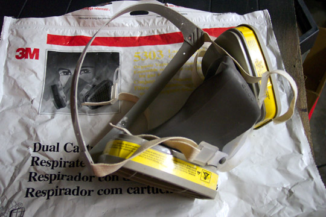
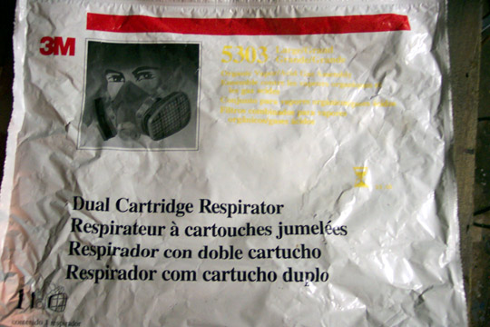
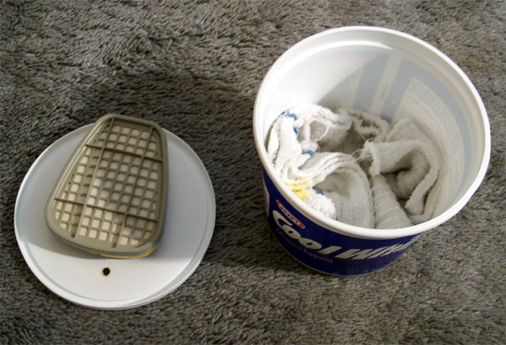
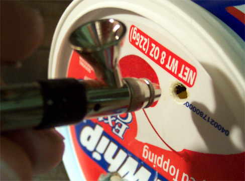

With this in mind I built a fume can this afternoon. It took about twenty minutes and cost virtually nothing to construct – I simply used materials that were lying around my garage and kitchen. I started with an 8-ounce Cool Whip canister and a 3M dual cartridge respirator used for automotive painting. You could go to Home Depot or Lowes to purchase the replaceable cartridges if you don’t have one that can be salvaged. I removed one cartridge from the respirator and measured it against the inside of the Cool Whip top to mark a spot to cut out a mounting hole. The cartridge includes a baffle so that air can only pass through one way; this means the cartridge will be mounted inside the container. I used my Xacto knife to cut out an opening just large enough for the cartridge mounting clips to fit in and then applied a bead of bathroom Silicone around the fitting. I also put a dab of silicone on the backside of the cartridge to prevent it from torqueing and tearing loose as time goes by. The cartridge was placed onto the lid and pressed into place.

A little silicone was pressing up around the outside mounting so I removed the baffle and cleaned up the excess and set it aside to cure for about 10 minutes. This is not long enough to fully cure but gave me enough hold to continue the construction. I put a beveled grinding stone into my Dremel and cut a small hole in the lid to fit the tip of my airbrush. I took an old dishtowel and stuffed it inside the can to absorb excess fluid and put the lid in place. Once the exposed silicone was dry to the touch I replaced the baffle.
Now I’m holding a very compact fume can, time to test it. I put some lacquer thinner into the airbrush, placed the tip into the small hole and let her rip. The brush hissed, the fluid level dropped, the baffle baffled and there was no odor released from the can. It works great and my paint room smells a whole heck of a lot better. Do this – live longer – build more models!
  